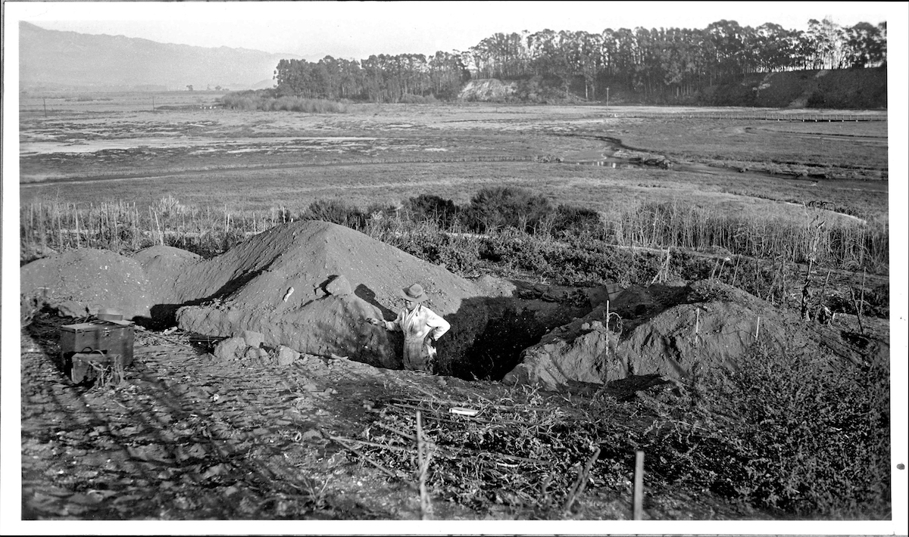
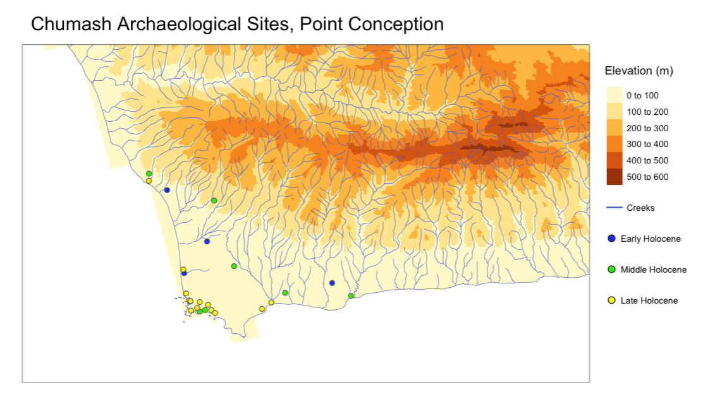
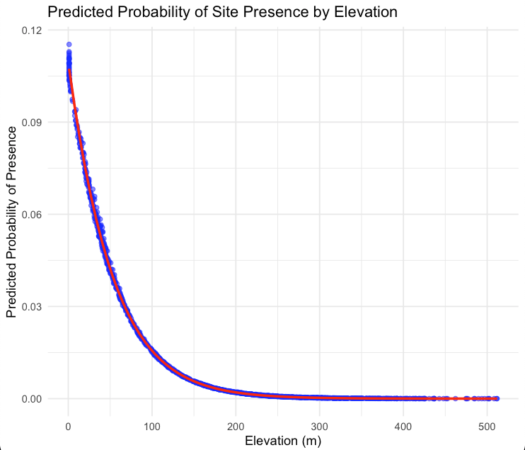
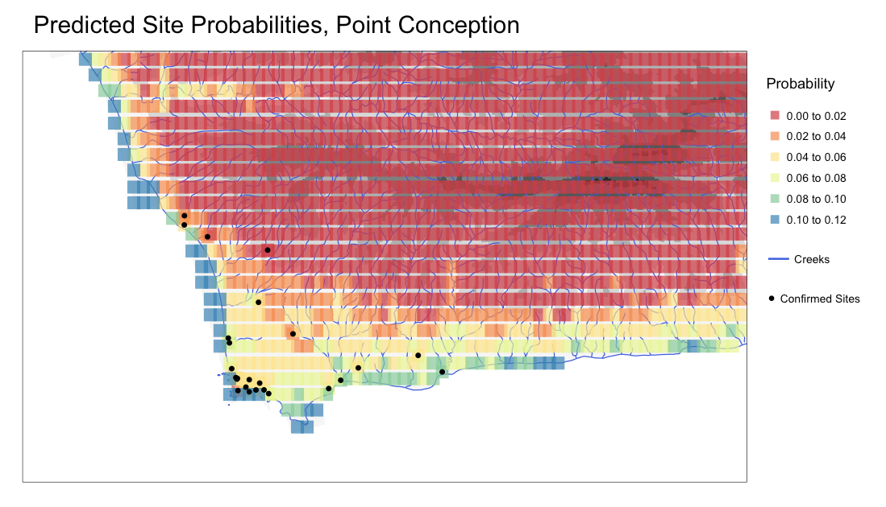
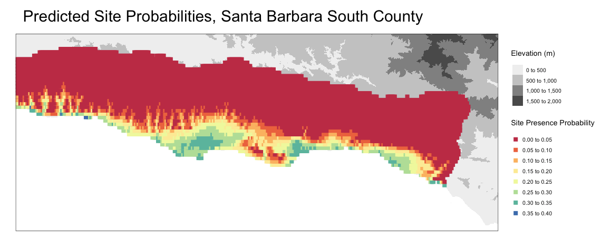

Introduction
Archaeological sites are traditionally found by identifying material on the surface, by some historic context, or plainly by chance. This analysis aims to use Archaeological Predictive Modeling to calculate possible site locations using the information of known sites.
Archaeological Predictive Modeling (APM) was first conceptualized by Kohler and Parker (1986)1 and Judge and Sebastian (1988)2. This technique uses logistic regression and identifies factors like vegetation cover, soil type, topography, and water access to identify areas for investigation. In short, APM seeks to discover to what degree environmental factors influence human behavior, and whether or not these settlement patterns can be used to identify areas of archaeological interest. In modern archaeology, APM has become essential for the quantitative assessment of archaeological site presence, and assists with preliminary planning for archaeological surveys.
In this analysis I focused on the Barbareño Chumash, the Chumash tribe that occupied the greater Santa Barbara area. Isolated from the rest of the continent by geographic borders, the Chumash never had many ancient technologies that other Native American tribes in North America are known to have possessed, such as ceramics and basic agriculture. They were still considered hunter gatherers, relying on coastal resources and harvesting acorns and small game, at the time of contact with the Spanish in 15423.
Predictive Model
The site data was sourced from an archaeological survey by Rick et al. (2022)4 of Chumash sites at Point Conception, CA. While this study identifies many sites before and after the Mission period, I chose to use only sites that predated the Mission period for this analysis, to identify only sites that are purely Chumash.

My goal in this analysis was to create a model based on the available site data at Point Conception, and apply it to the greater Santa Barbara area (the known range of the Barbareño). For this model, the chosen predictors were topography and access to water. The Chumash were not an agricultural people, and so soil type was not selected as a possible predictor. Vegetation cover in the Santa Barbara area has stayed fairly consistent in the last few thousand years, and so this was not a useful predictor either5.
All calculations for this study were done entirely in R. To conduct this study, and to compensate for lack of actual site data, I generated 2,000 points across the Point Conception area and created the binary variable ‘presence’ to categorize actual sites and generated points. I then extracted elevations and calculated distances for each point to the nearest water source, based on data obtained from USGS of creeks and elevations in the Santa Barbara area.
I then made a logistic regression model, with the dependent variable ‘presence’, and the predictors elevation and water_proximity. This logistic regression estimates the relationship between these predictors and the likelihood of a site being present (presence = 1), using a log-odds transformation to relate the probabilities to the predictors. A square root transformation on water_proximity was used to reduce the impact of outliers and to linearize the relationship between this predictor and the log-odds of presence.
logit_mod <- glm(presence ~ elevation_m + sqrt(water_proximity),
data = all_sites,
family = binomial)The residuals (differences between observed and predicted values) for all points from the fitted model were then extracted and added as a column to the sites data frame, before being converted to a spatial feature object. A spatial neighborhood structure was created using the dnearneigh function in the package spdep, defining neighbors as points within 50 meters of each other. This was then used to create a spatial weights matrix using the function nb2listw, also in the spdep package, assigning weights to the relationships between points based on proximity. Then, spatial lag was calculated for the elevation variable using the spdep function lag.listw, representing a weighted average of elevation values of neighboring points6.
A new logistic regression model was then fitted, including elevation_m, the square root of water_proximity, and the spatially lagged elevation_m (lag_elevation) as predictors. The inclusion of the spatial lag variable accounts for spatial autocorrelation, helping the model to better explain variations in site presence.
logit_mod_spatial <- glm(presence ~ elevation_m + sqrt(water_proximity) + lag_elevation,
data = all_sites,
family = binomial)Results
The coefficients of this model showed a negative correlation between elevation and site presence, with a coefficient of -0.02, indicating that with every meter of elevation gain, the log-odds of site presence decreases by 0.02. With a p-value of <0.001, this is highly significant. It also showed that distance to water sources were statistically insignificant, with a coefficient of 0.0055, and a p-value of 0.894. This could possibly be due to the high number of creeks in the relatively small study area at Point Conception. Both these results are likely results of spatial autocorrelation.

Predicted probabilities of presence were then calculated for all points in the data set, using the new spatial model. This data was once again converted to a spatial feature object and mapped according to each points’ predicted probability.

I then used these same steps for calculating probability values and applied it to 20,000 generated points across the Santa Barbara area, calculating elevations and distances to water sources for each. Because these are all hypothetical site locations, and the model requires binary values for presence, I took the mean elevation of the actual sites at Point Conception (42 meters) and applied a presence value of 1 to any point that was within 10 meters of the mean.

Potential Improvements
One significant limitation to this model is the limited spatial extent and density of available site data. Only 25 actual site locations were used in this model, and these sites cover a relatively small geographic area at Point Conception. This has a high potential for spatial autocorrelation, which would bias model predictions when applied to the greater Santa Barbara area. This autocorrelation is evident, as the greatest predictor for site presence in the model was elevation, and the sites at Point Conception all have similar, relatively low elevations.
To prevent spatial autocorrelation, it would be ideal for this study to use site locations across the Santa Barbara area; however, to protect sensitive cultural sites from unauthorized disturbance, these site locations are typically confidential. Access to these site locations would likely enhance this model’s accuracy. Adding other predictors like preferred soil types for Coast Live Oak (the Barbareño Chumash’s preferred source for acorns) could also be useful. Therefore, improving this model relies on data availability.
Theoretically, this exact model could be applied to other historic or ancient cultures around the world, depending on data availability for known sites and predictor variables. Vaughn and Crawford (2009)7 used a similar model to assess site presence probability of the Maya in the Yucatan Peninsula, in Mexico and Guatemala. Their most predictive variables were Tasseled Cap Greenness (brightness, greenness, and wetness of vegetation), eastern aspect (if an area has an eastern view of the horizon), and the proximity of flat land for monument construction or agriculture (>= 90 sq. m). With the Maya, which had a much more complex society, their study was able to use these variables to much more accurately predict site presence.
Vaughn and Crawford also used a variable for slopes for their study area. Aside from adding additional site data, a clear next step to improving this model could be calculating slopes of the area within a buffer of each generated point, as the Chumash are not known to have settled on uneven topography.
Conclusion
Although this application of APM is only preliminary and contains too little data to be regarded as precise, this model still identifies locations where large Chumash settlements are known to have existed. Some of the locations identified by this model include the known locations of the Barbareño Chumash sites Qasil (El Capitan Canyon), ?axwin and Mikiw (Dos Pueblos Canyon Ranch), Kuyumu (Haskell’s Beach), Heliyik (UCSB), Helo (Santa Barbara Airport), Syuxtun (Santa Barbara), ’Amólomol (Santa Barbara), and Qoloq (Carpinteria)8.
As a future local project, it would be interesting to apply this model to the Island Chumash, who once inhabited the Channel Islands. The Channel Islands have relatively little developed area and a higher potential for the presence of preserved sites. Although this may prove difficult, as the Island Chumash were much more reliant on coastal resources, and the model may point to all coastal areas as having a high potential for site presence. Data on the historic prevalence of these coastal resources could be useful to narrow down these areas, if the data is available. It would also be interesting to follow Vaughn and Crawford, and attempt to use APM with Maya sites or elsewhere.
Overall, APM itself cannot accurately locate archaeological sites; it can only identify areas worthy of archaeological investigation. APM seems to work best for more complex societies with a higher number of determinable predictor variables, such as in Vaughn and Crawford’s study. However, this basic use of APM on the Chumash in the Santa Barbara area provides arguably accurate results, although it is broad in its scope, and limited by data availability. Through the addition of more site data and determination of more predictor variables, this model can be refined. And while a more refined model may narrow down the most probable areas for site presence, the only way to confirm its validity is through systematic archaeological survey on the ground.
_
View all code for this project here, data not included: https://github.com/ryangreen6/Chumash_Predictive_Modeling
The data for this project was sourced from the United States Geological Survey9.
_
Banner photo: https://www.independent.com/2021/02/09/appreciating-goletas-deep-and-dense-chumash-past/
Footnotes
Kohler, T. A., & Parker, S. C. (1986). Predictive models for archaeological resource location. In M. B. Schiffer (Ed.), Advances in Archaeological Method and Theory (pp. 397–452). Academic Press. https://doi.org/10.1016/B978-0-12-003109-2.50011-8↩︎
Judge, W. James, and Lynne Sebastian, eds. (1988). Quantifying the Present and Predicting the Past: Theory, Method, and Application of Archaeological Predictive Modeling. U.S. Department of the Interior, Bureau of Land Management Service Center. Denver, Co., 690 pp.↩︎
Pritzker, B. M. (1998). Native Americans: An Encyclopedia of History, Culture, and Peoples (Vol. 1). Oxford University Press.↩︎
Rick, T. C., Braje, T. J., Graham, L., et al. (2022). Cultural keystone places and the Chumash landscapes of Kumqaq’, Point Conception, California. American Antiquity, 87(3), 487–504. https://doi.org/10.1017/aaq.2021.154↩︎
Modugno, T. (2022). Dos Pueblos Chumash. Retrieved from https://goletahistory.com/dos-pueblos-chumash/↩︎
https://www.rdocumentation.org/packages/spdep/versions/1.3-8↩︎
Vaughn, S., & Crawford, T. (2009). A predictive model of archaeological potential: An example from northwestern Belize. Applied Geography, 29(4), 542–555. https://doi.org/10.1016/j.apgeog.2009.01.001↩︎
King, C. (1975). The Names and Locations of Historic Chumash Villages. The Journal of California Anthropology, 2(2). Retrieved from https://escholarship.org/uc/item/8833s5k5↩︎
USGS. https://apps.nationalmap.gov/downloader/↩︎